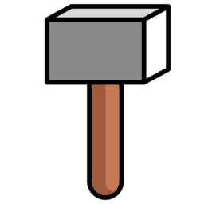
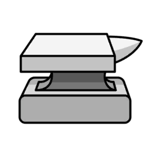
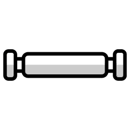
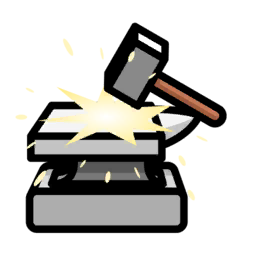

테스트 월드
공격력
0
∞
∞
원시 시대
전투 1-1
내 캐릭터
—

z
z
AUTO
ON
전투 승리!
다음 웨이브
다시 전투
장착 장비
i

∞
대장간
Lv. 1
자동
출전 준비
전투 조작 · 배속 · 기록
00:00.0
전투
스테이지
스킬 · 펫 · 기술

클랜 기술
전체 목록

테스트 월드 준비 중
장비와 전투 데이터를 불러오고 있어요.
∞
장비
∞
×
전체 장비
장비 선택
×
장착 해제
전투
×
전투 시작
다시 준비
스킬 자동
자동 진행
전투 배속
0.5×
1× 속도
2× 속도
4× 속도
공격력
—
최대 체력
—
평균 DPS
0
누적 피해
0
능력치 설정
스테이지 설정
전투 기록
0회 타격
전투를 시작하면 피해와 스킬 사용 내역이 표시돼요.
테스트 월드
×